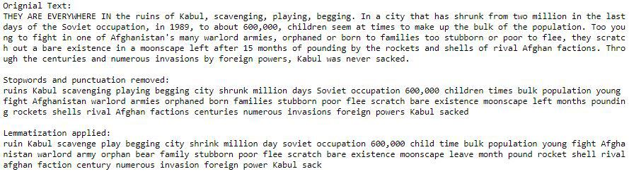

Chapter 7 Preprocess Breadtext for both Datasets
This chapter is written in Python. To see the original file go to the folder python_scripts/.
All the code in the chapter is run on both df_NYT and df_guardian but here i only show the processing df_NYT.
Now we are going to move into the domain of Natural Language Processing (NLP). This is a huge field with many applications and many methods/analysis. Moreover there are a ton of packages in both R and Python for doing NLP. I have chosen to use a package in python called spacy. This package is really powerful and has great documentation. See their webpage to get started: https://spacy.io/.
So, going back to the project we have scraped the breadtext from all the articles. We need to preprocess that text before we can apply NLP-analysis. We also use spacy to preprocess the text because it has some useful functions. The preprocessing contains three major steps:
- We remove punctuation and special characters.
- We remove stopwords. Stopwords are those common/neutral words that do not add meaning to a text. These are words such as allow or a.
- We lemmatize all the words. Lemmatization is the process of returning all words to their most basic form, the lemma. For example, the verb to walk may appear as walk, walked or walking. Lemmatization returns all these forms of walking to their base form to walk.
All right, lets see some code. We run all the code below for both df_NYT and df_guardian, but I only show the code for df_NYT.
We start by loading packages and data.
import spacy
import numpy as np
import pandas as pd
#importing the stopwords
from spacy.lang.en.stop_words import STOP_WORDS
#loading the dataframes and combining them
df1 = pd.read_csv("data/new_york_times/NYT_clean_1.csv")
df2 = pd.read_csv("data/new_york_times/NYT_clean_2.csv")
#combining
df = pd.concat([df1, df2])Then we load what is called the english small pipeline from spacy. This is basicly a nlp-model with lots of cool functions that we are going to use. We also exclude certain components of the pipeline that we dont need to speed up processing.
nlp = spacy.load("en_core_web_sm", exclude=["ner", "entity_linker", "entity_ruler"])Now we can define helper functions that performs the preprocessing steps described above. We first define a function that removes punctuation, special characters and stopwords. It takes ‘article’ as argument which is one breadtext from an article. It then converts that article to an nlp-object which is necesarry for the functions to work. It then looks through all the tokens (which is basically all the words) and filters out special characters, stopwords and extra spaces.
# function for Removing punctuation, stopwords and special chars from a sentence using spaCy
def remove_special_chars_and_stopwords(article):
article = nlp(article)
article = ' '.join([token.text for token in article
if token.is_punct != True and
token.is_quote != True and
token.is_bracket != True and
token.is_currency != True and
token.is_digit != True and
token.is_stop != True])
#removing extra spaces
article = " ".join(article.split())
return nlp(article)We define another helper function which performs the lemmatizing. It looks through all the words and converts them to their lemma.
#function for lemmatizing
def lemmatize(sentence):
article = ' '.join([word.lemma_ for word in
sentence])
return nlp(article)Now, lets see how these functions work on a small snippet of text from an article. We first print the original text, then the text after stopwords and punctuation are removed and finally after lemmatization is applied. We see how the text becomes shorter and less readable for us mere humans when these steps are applied. But for the functions in spacy the last text is just yummi.
#trying out the function on a single text
article = df.iloc[28,3]
print("Orignial Text: ")
print(article[0:582] + "\n")
#removing special chars and stopwords
article = remove_special_chars_and_stopwords(article)
print("Stopwords and punctuation removed: ")
print(str(article)[0:405] + "\n")
#lemmatizing the article
article = lemmatize(article)
print("Lemmatization applied:")
print(str(article)[0:362] + "\n")
We now know that the helper functions do what they are supposed to do. This means that we can apply those functions to all the articles in a for-loop.
#defining index to loop over
article_index = 0
#defining lists for the cleaned articles
articles_clean = []
#looping over bread texts from all articles and running the functions on them
for article in df.index:
#load article using index
article = df.iloc[article_index,3]
#cleaning the article
article = remove_special_chars_and_stopwords(article)
#lemmatizing the article
article = lemmatize(article)
#appending the clean article to a list of clean articles
articles_clean.append(article)
#indexing to next article
article_index += 1
#checking progress
print(article_index)
#making a new column in df containing the cleaned bread text
df['bread_text_preprocessed'] = articles_cleanLastly we save it to three datasets. Otherwise the files are too large for Git.
#splitting into three datasets
df1 = df.iloc[0:7500,]
df2 = df.iloc[7501:15000,]
df3 = df.iloc[15001:21113, ]
#saving to three new files
df1.to_csv("data/new_york_times/NYT_clean_1.csv", index = False)
df2.to_csv("data/new_york_times/NYT_clean_2.csv", index = False)
df3.to_csv("data/new_york_times/NYT_clean_3.csv", index = False)All good. We are now done with cleaning, wrangling and preprocessing. We are ready for analysis!